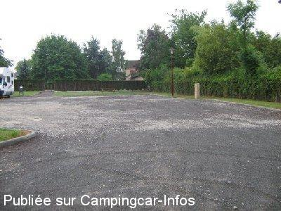
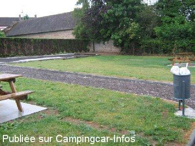
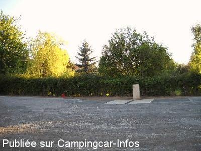
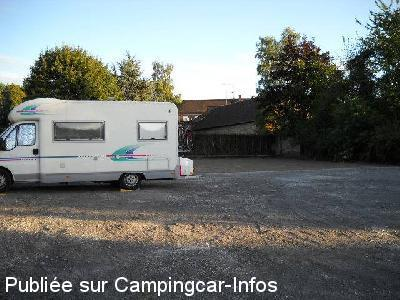

ASN = Aire de services avec stationnement nuit possible de :
CHANDAI
(N° 490)
Accès/adresse :
Rue de l'ancienne Poste
61300 CHANDAI
61300 CHANDAI
Latitude : (Nord) 48.75422° Décimaux ou 48° 45′ 15′′
Longitude : (Est) 0.73758° Décimaux ou 0° 44′ 15′′
Tarif : Gratuit
Type de borne : AIRESERVICES
Services :


Commerces à proximité
Autres informations :
5 emplacements légèrement en pente

Le 05/09/2011 par

Le 05/09/2011 par dugland27

Le 09/09/2010 par mado 93

Le 09/09/2010 par mado 93
de
titmary027
le 10/03/2015 :
Aire agréable et plus pratique que celle de Verneuil.
Aire refaite à neuf et services gratuits.
Attention passage étroit sur quelques mètres.
Merci à la municipalité.
Aire agréable et plus pratique que celle de Verneuil.
Aire refaite à neuf et services gratuits.
Attention passage étroit sur quelques mètres.
Merci à la municipalité.
de
Richard & Helen
le 16/03/2012 :
We spent night of 14/3/12 peacefully on this pleasant,clean and level aire in the company of 3 other (French) units. Thank you Chandai
We spent night of 14/3/12 peacefully on this pleasant,clean and level aire in the company of 3 other (French) units. Thank you Chandai
de
patrice
le 07/06/2011 :
bonjour a vous
on y a dormi hier soir, le chien du voisin bordant l'aire un peu bruyant pendant que l'on jouait a la petanque donc on s'est eloignés, autrement aire refaite y compris piste de petanque, pas tout a fait finie 2 tables de pique nique neuve plus de bornes les services sont gratuits, merci a la commune, les cloches s'arretent a 22h00 et recommence a 07h00 boulangerie a 50 metres, tres bien et eux restos
propre et calme, j'ai des photos mais ne peut pas les mettre car il faut qu'elles soient en jpg, pfffffffffff
bonjour a vous
on y a dormi hier soir, le chien du voisin bordant l'aire un peu bruyant pendant que l'on jouait a la petanque donc on s'est eloignés, autrement aire refaite y compris piste de petanque, pas tout a fait finie 2 tables de pique nique neuve plus de bornes les services sont gratuits, merci a la commune, les cloches s'arretent a 22h00 et recommence a 07h00 boulangerie a 50 metres, tres bien et eux restos
propre et calme, j'ai des photos mais ne peut pas les mettre car il faut qu'elles soient en jpg, pfffffffffff
de
bernardeau
le 09/09/2010 :
Très belle plate forme! Nouveau parking en cours de finition, en graviers, pas bien plat mais tout gratuit pour le moment, légèrement bruyant, route fréquentée. Lorsque nous sommes passés, l'accès se faisait en passant devant l'église à gauche, très étroit. Merci à la municipalité pour cette réalisation.
Très belle plate forme! Nouveau parking en cours de finition, en graviers, pas bien plat mais tout gratuit pour le moment, légèrement bruyant, route fréquentée. Lorsque nous sommes passés, l'accès se faisait en passant devant l'église à gauche, très étroit. Merci à la municipalité pour cette réalisation.